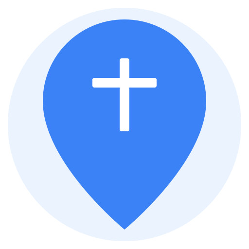
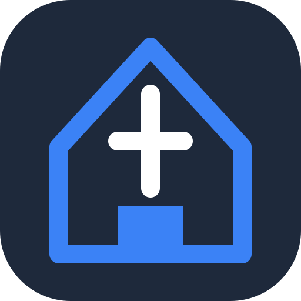
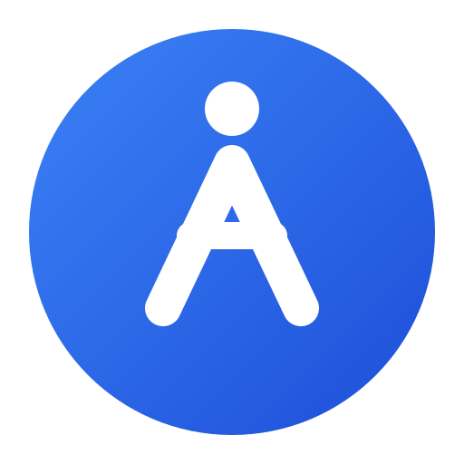

Conceito focado em localização e descoberta, usando o ícone universal de mapas.

Visual moderno e tecnológico, ideal para um ambiente de aplicativo mobile.

Abstrato e minimalista, focando no crescimento espiritual e comunidade.